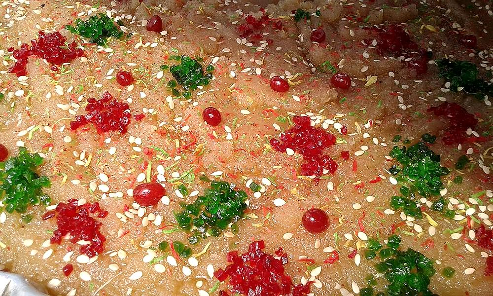

Sindhi Seero
coarse semolina halwa, heavy with ghee and cardamom, made for every good occasion

Contains: milk, gluten, tree nuts
Ingredients
Quantities for 6.
- 1 cup, coarse Rava
- 3/4 cup Gheeseero is not a dish to make lean
- 1 cup Sugar
- 2.5 cups Water
- 1/2 cup Milkfor a softer setoptional
- 6 pods, seeds crushed Cardamom
- 2 tbsp, slivered Almondsoptional
- 2 tbsp Raisinsoptional
- a pinch Saltoptional
Cookware
stovetop, kadhai
Checked against the ingredient list for ten allergens: milk, egg, fish, crustaceans, tree nuts, peanuts, sesame, mustard, soy and gluten. Brands vary, so read the label on anything new to you.
Before you start
- Bring the water, milk and sugar to a boil in a separate pan and keep it simmering. The syrup must be hot when it meets the rava or the halwa turns lumpy.
- Sliver the almonds and have the cardamom crushed before you start roasting. Once the rava is in the ghee you cannot step away.
- Use a heavy kadhai. Thin pans scorch the rava on one side while the rest is still pale.
Method
- Bring the water, milk and sugar to a boil in a saucepan, stir until the sugar dissolves, and keep it on the lowest heat.
- Melt the ghee in a heavy kadhai over low heat and fry the raisins for 30 seconds until they puff, then lift them out.
- Fry the slivered almonds in the same ghee for 1 minute until pale gold, and lift them out too.
- Add the rava to the ghee and roast over low-medium heat for 10-12 minutes, stirring constantly.Go by smell and colour: it should turn the shade of wet sand and smell toasted, like biscuits. This is the whole flavour of the dish.
- Add the pinch of salt and the crushed cardamom and stir for 30 seconds.
- Take the kadhai off the heat and pour in the hot syrup in a steady stream, stirring hard with your other hand.Off the heat and pouring slowly. It will spit violently. Stand back and keep the spoon moving or it will seize into lumps.
- Return to low heat and cook 6-8 minutes, stirring, until the rava has drunk all the liquid and the mass pulls cleanly away from the sides of the pan.
- Stir in most of the fried almonds and raisins, keeping some back.
- Cover and rest off the heat for 5 minutes so the grains swell and soften fully.Skipping this rest leaves a faintly gritty seero. It costs five minutes.
- Fluff with a fork, scatter the reserved nuts and raisins, and serve warm.
Storage
Keeps 3 days refrigerated. It firms up solid when cold. Reheat portions covered with 1 tbsp milk, or steam for 5 minutes to bring back the soft texture.
Nutrition Medium estimate
Low protein: 6 g a serving, 4% of the calories
| Per serving187 g | Per 100 g | |
|---|---|---|
| Calories | 510 kcal | 274 kcal |
| Protein | 5.5 g | 3 g |
| Carbohydrate | 59.6 g | 32 g |
| of which sugars | 37.8 g | 20 g |
| Fibre | 1.9 g | 1 g |
| Fat | 29.0 g | 16 g |
| of which saturated | 16.5 g | 9 g |
| of which unsaturated | 10.8 g | 6 g |
Ingredients given to taste count as zero, so the real figures run a little higher. Estimated from raw ingredients using USDA FoodData Central.
More like this: Vegetarian Indian recipes · No onion no garlic recipes · Sindhi recipes
Times, yields, allergens and nutrition are guidance. Use your own judgement on doneness and on storing. More in About.